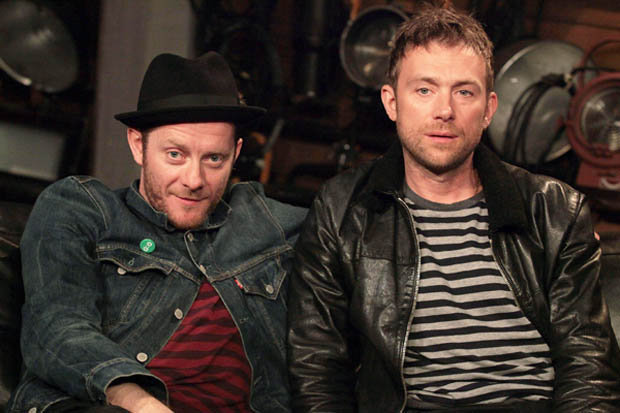

2-D
Vocalista principal de Gorillaz, conocido por su voz melancólica y sus ojos completamente negros. Es tranquilo, distraído y a menudo parece perdido en su propio mundo.
Gorillaz es una banda virtual británica formada en 1998 por Damon Albarn y Jamie Hewlett. El grupo se caracteriza por sus miembros animados y su innovador enfoque visual y musical, fusionando géneros como rock, hip-hop, electrónica y pop. A lo largo de su carrera, Gorillaz ha lanzado varios álbumes aclamados y ha colaborado con numerosos artistas internacionales, consolidándose como un proyecto pionero en la música contemporánea y la cultura digital.

Vocalista principal de Gorillaz, conocido por su voz melancólica y sus ojos completamente negros. Es tranquilo, distraído y a menudo parece perdido en su propio mundo.
Bajista y autoproclamado fundador de la banda, con una actitud arrogante y un pasado turbio. Representa el caos y la energía oscura del grupo.

Guitarrista japonesa experta en artes marciales y tecnología. Aunque fue introducida como una niña misteriosa, con el tiempo se convirtió en una figura clave del grupo.

Baterista con influencias del hip hop, conocido por su carácter reflexivo y su conexión con lo espiritual. Fue poseído por espíritus de amigos fallecidos, que influyeron en el sonido de la banda.
Género principal: Trip hop, rap rock, lo-fi
Descripción: Mezcla ecléctica de hip hop, dub, rock alternativo y electrónica con una estética lo-fi. Dio origen al universo visual de la banda virtual.
Género principal: Hip hop alternativo, rock electrónico, soul
Descripción: Un álbum conceptual más oscuro, con temas de guerra, aislamiento y crítica social, todo con una producción pulida.
Género principal: Synthpop, funk, pop orquestal
Descripción: Un viaje sónico sobre contaminación y consumismo, con arreglos sinfónicos y electrónica vibrante.
Género principal: Electrónica minimalista, ambient, synthpop
Descripción: Grabado en iPad durante una gira, es introspectivo, atmosférico y casi improvisado.
Género principal: Dance, R&B, hip hop electrónico
Descripción: Una fiesta sonora en tiempos turbulentos, con ritmos frenéticos, mucha colaboración y enfoque en el caos moderno.
Género principal: Synthpop, funk suave, dream pop
Descripción: Un álbum más íntimo, menos colaborativo y centrado en el personaje 2-D, con tonos suaves y melancólicos.
Género principal: Pop alternativo, hip hop, electrónica experimental
Descripción: Lanzado como una serie de episodios, destaca por su variedad sonora y colaboraciones únicas.
Género principal: Funk psicodélico, pop electrónico
Descripción: Un álbum conceptual con narrativa de secta ficticia, producción pulida y ritmos bailables.